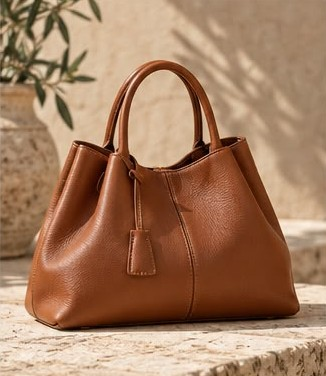
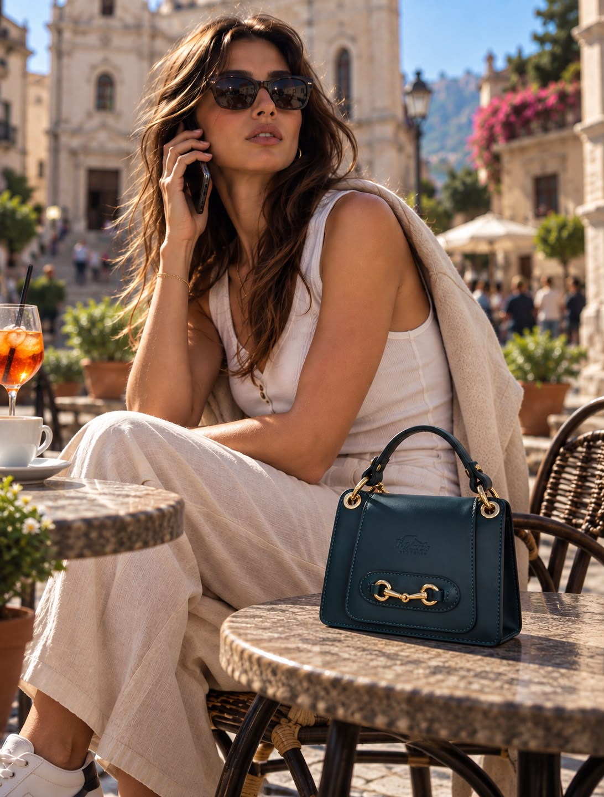
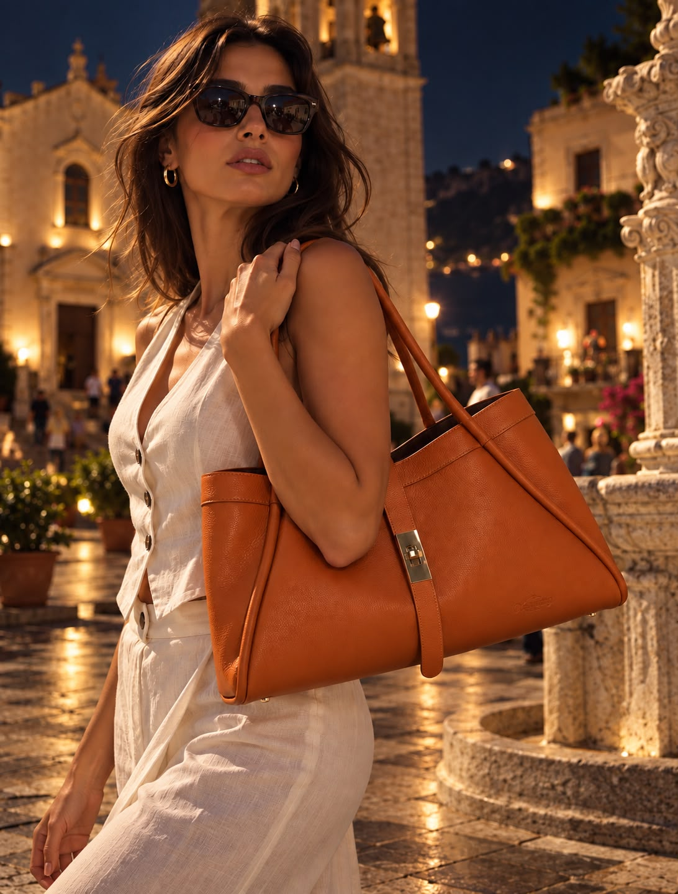
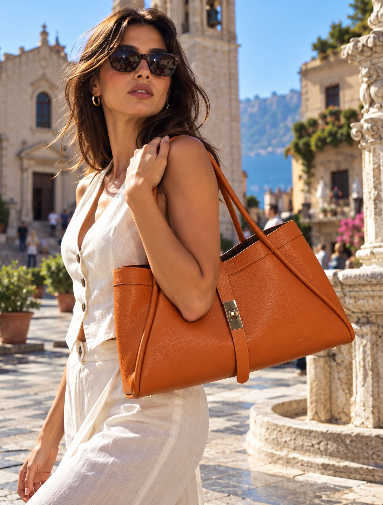
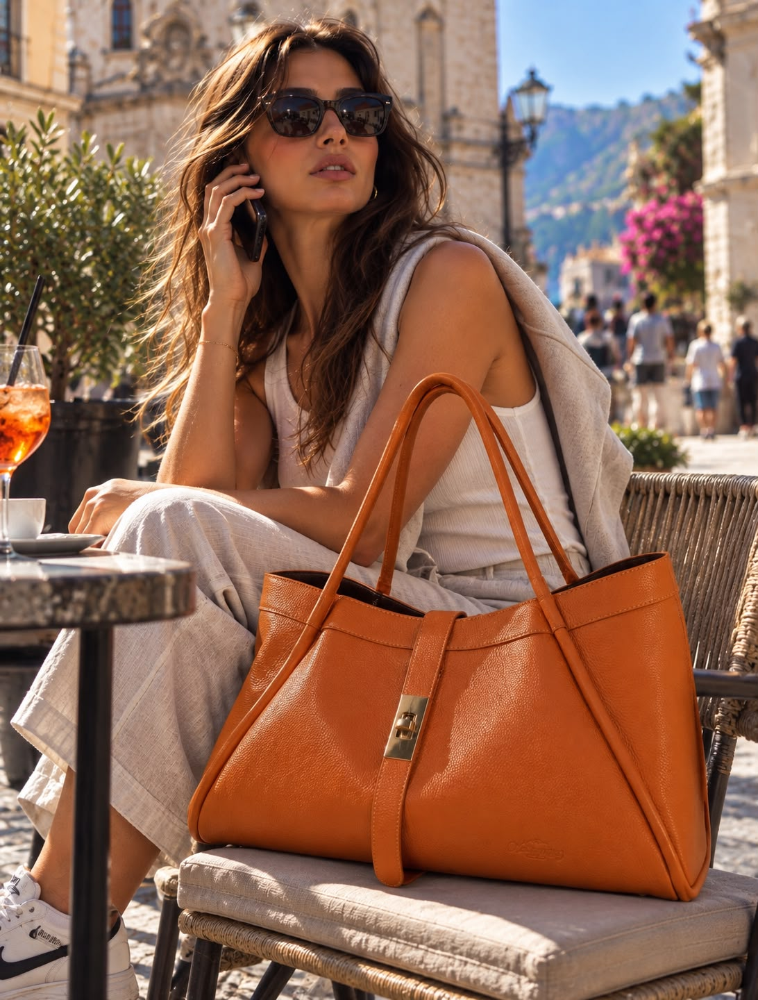

Idea Regalo




La creazione simbolo di Mara's Taormina: borsa strutturata a mano in pelle pieno fiore color Petrolio con iconico morsetto in ottone dorato e tracolla rimovibile.
Realizzata interamente a mano da maestri pellettieri italiani per la boutique Mara's di Taormina. Ogni cucitura racconta la tradizione siciliana reinterpretata con linee contemporanee e morsetto iconico in ottone dorato.
• Spedizione Italia & UE: Corriere Espresso tracciato (consegna in 2–3 giorni lavorativi). Tutti gli articoli, inclusi i portachiavi da €19, sono spedibili singolarmente in Italia.
• Spedizioni Internazionali USA & Extra-UE: Spedizione Express assicurata dedicata ai nostri clienti internazionali (ordine minimo €200 per gli accessori entry-level).
La vacchetta e il cuoio pieno fiore acquisiscono carattere con il tempo. Conservare nella dustbag in cotone Mara's inclusa, lontano da fonti dirette di calore o umidità. Nutrire periodicamente con crema neutra specifica per pelletteria.
Abbina la tua creazione al portafoglio in cuoio coordinato, al portachiavi portafortuna o agli altri modelli artigianali della collezione.






Come nella migliore tradizione pellettiera italiana, ogni borsa Mara's nasce da vacchetta e cuoio pieno fiore conciati al vegetale con tannini naturali. Con l'uso quotidiano e la luce del sole di Sicilia, la pelle si ammorbidisce e sviluppa una patina ambrata unica e irripetibile.
Pelli selezionate a pieno fiore lavorate con estratti naturali, prive di sostanze chimiche aggressive e destinate a durare decenni.

02Taglio su banco, costolatura dipinta a pennello, impunture rinforzate e metalleria in ottone spazzolato con logo Mara's.
Ogni creazione viaggia nella sua Dustbag protettiva in cotone naturale con certificato di autenticità della Boutique di Via di Giovanni 9/B.